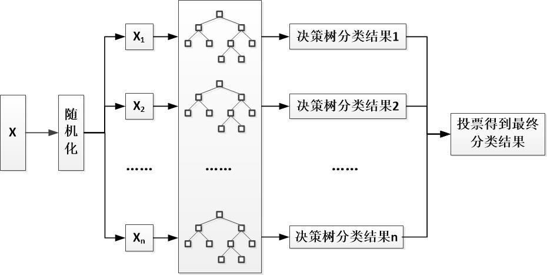

数据比例： |
需要输入一个不超过1的数据分割比例，程序将根据您输入的值，确定分割过程中每个数据分片中样例数量占总样例数量的多少。换言之，就是决策森林中，每棵决策树用于训练的样本集样例数量占总数的百分比。 |
|
属性比例： |
需要输入一个不超过1的数据分割比例，程序将根据您输入的值，确定分割过程中每个数据分片中属性数量占总属性的多少。换言之，就是决策森林中，每棵决策树用于训练的样本集中使用的属性个数占总数的百分比。 |
|
分片数： |
需要输入一个正整数，用于确定生成的随机森林中，决策树的数量。 |
|
|  | ||
数据比例和属性比例，主要体现在上图的随机化过程中； 分片树则是上图中，树形结构的数量，也对应着随机化生成的数据片数量以及将会生成的规则集数量。 |
||